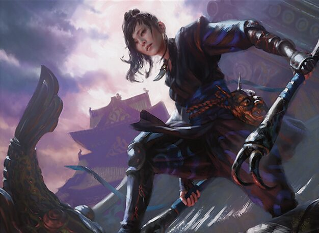

Welcher Commander gewinnt mit 200 €?
64 beliebte Commander, laufend in Forge gegeneinander getestet. Zu jedem Deck: Kartenliste, Statistik und Kaufliste für Cardmarket.
Letztes Turnier: . Bisher 3 Turniere mit rund 431 gewerteten Partien.
Rangliste
Die stärksten Decks bis 200 € (Bracket 3: höchstens 3 Game Changer).

Valgavoth, Harrower of Souls

Ureni of the Unwritten

Sephiroth, Fabled SOLDIER
Hall of Fame bis 200 €
aus 3 Turnieren| # | Commander | Punkte | Siegquote | Partien | Preis | Status |
|---|---|---|---|---|---|---|
| 1 | | 23 Plätze 3 · 3 · 4 | 54 % | 30 | 208,13 € | Über dem Schnitt |
| 2 | | 21 Plätze 4 · 2 · 6 | 55 % | 29 | 204,44 € | Über dem Schnitt |
| 3 | Sephiroth, Fabled SOLDIER // Sephiroth, One-Winged Angel 52 % · 29 Partien · 209,69 € Über dem Schnitt | 13 Plätze 7 · 2 | 52 % | 29 | 209,69 € | Über dem Schnitt |
| 4 |  | 13 Plätze 6 · 3 | 50 % | 30 | 209,94 € | Über dem Schnitt |
| 5 |  | 11 Plätze 10 · 4 · 8 | 49 % | 29 | 209,84 € | Über dem Schnitt |
| 6 |  | 11 Plätze 6 · 5 | 48 % | 27 | 209,52 € | Über dem Schnitt |
| 7 |  | 10 Platz 1 | 44 % | 26 | 206,22 € | Über dem Schnitt |
| 8 |  | 10 Platz 1 | 41 % | 29 | 209,47 € | Über dem Schnitt |
| 9 |  | 10 Platz 1 | 38 % | 29 | 209,53 € | Noch offen |
| 10 |  | 9 Platz 2 | 39 % | 28 | 209,99 € | Noch offen |
| 11 |  | 6 Platz 5 | 43 % | 29 | 209,96 € | Über dem Schnitt |
| 12 |  | 6 Platz 5 | 31 % | 29 | 208,55 € | Noch offen |
| 13 |  | 4 Plätze 9 · 9 | 44 % | 27 | 209,85 € | Über dem Schnitt |
| 14 |  | 4 Platz 7 | 34 % | 30 | 209,92 € | Noch offen |
| 15 | 4 Platz 7 | 31 % | 30 | 210,00 € | Noch offen | |
| 16 |  | 3 Platz 8 | 39 % | 29 | 209,85 € | Noch offen |
| 17 |  | 3 Platz 8 | 28 % | 29 | 206,14 € | Noch offen |
| 18 |  | 2 Platz 9 | 27 % | 27 | 212,60 € | Noch offen |
| 19 |  | 1 Platz 10 | 23 % | 27 | 208,16 € | Noch offen |
| 20 |  | 1 Platz 10 | 22 % | 26 | 210,00 € | Noch offen |
| 21 |  | 0 | 32 % | 26 | 209,75 € | Noch offen |
| 22 |  | 0 | 30 % | 28 | 209,83 € | Noch offen |
| 23 |  | 0 | 29 % | 20 | 209,99 € | Noch offen |
| 24 |  | 0 | 28 % | 29 | 209,40 € | Noch offen |
| 25 |  | 0 | 28 % | 29 | 209,02 € | Noch offen |
| 26 |  | 0 | 26 % | 27 | 209,95 € | Noch offen |
| 27 |  | 0 | 25 % | 25 | 209,76 € | Noch offen |
| 28 |  | 0 | 24 % | 26 | 209,45 € | Noch offen |
| 29 |  | 0 | 24 % | 25 | 209,29 € | Noch offen |
| 30 |  | 0 | 24 % | 28 | 207,02 € | Noch offen |
| 31 |  | 0 | 23 % | 26 | 195,05 € | Noch offen |
| 32 |  | 0 | 23 % | 28 | 209,79 € | Noch offen |
| 33 |  | 0 | 22 % | 26 | 207,38 € | Noch offen |
| 34 |  | 0 | 22 % | 28 | 209,72 € | Noch offen |
| 35 |  | 0 | 22 % | 29 | 210,00 € | Noch offen |
| 36 |  | 0 | 22 % | 26 | 209,91 € | Noch offen |
| 37 |  | 0 | 21 % | 27 | 209,62 € | Noch offen |
| 38 |  | 0 | 20 % | 28 | 209,12 € | Noch offen |
| 39 |  | 0 | 20 % | 26 | 209,90 € | Noch offen |
| 40 |  | 0 | 20 % | 23 | 209,92 € | Noch offen |
| 41 |  | 0 | 19 % | 26 | 208,88 € | Noch offen |
| 42 |  | 0 | 19 % | 29 | 204,27 € | Noch offen |
| 43 |  | 0 | 19 % | 25 | 207,63 € | Noch offen |
| 44 |  | 0 | 18 % | 28 | 208,98 € | Noch offen |
| 45 |  | 0 | 17 % | 21 | 209,92 € | Noch offen |
| 46 |  | 0 | 17 % | 30 | 209,60 € | Noch offen |
| 47 |  | 0 | 16 % | 25 | 209,97 € | Noch offen |
| 48 |  | 0 | 15 % | 28 | 207,59 € | Noch offen |
| 49 |  | 0 | 15 % | 27 | 209,96 € | Noch offen |
| 50 |  | 0 | 15 % | 24 | 209,96 € | Noch offen |
| 51 |  | 0 | 14 % | 28 | 209,82 € | Noch offen |
| 52 |  | 0 | 14 % | 24 | 205,39 € | Noch offen |
| 53 |  | 0 | 13 % | 26 | 209,93 € | Noch offen |
| 54 |  | 0 | 13 % | 26 | 209,89 € | Noch offen |
| 55 |  | 0 | 12 % | 27 | 209,97 € | Noch offen |
| 56 |  | 0 | 12 % | 25 | 209,37 € | Noch offen |
| 57 |  | 0 | 12 % | 26 | 209,60 € | Noch offen |
| 58 |  | 0 | 7 % | 27 | 209,82 € | Unter dem Schnitt |
| 59 |  | 0 | 6 % | 23 | 209,95 € | Unter dem Schnitt |
| 60 |  | 0 | 5 % | 25 | 209,44 € | Unter dem Schnitt |
| 61 |  | 0 | 4 % | 27 | 208,97 € | Unter dem Schnitt |
| 62 |  | 0 | 4 % | 24 | 208,64 € | Unter dem Schnitt |
| 63 |  | 0 | 4 % | 26 | 209,58 € | Unter dem Schnitt |
| 64 |  | 0 | 0 % | 28 | 209,89 € | Unter dem Schnitt |
Letztes Turnier:
bis 200 €, 64 Decks| # | Commander | Siegquote | Siege / Partien | Leistung | Status |
|---|---|---|---|---|---|
| 1 | | 60 % | 6 / 10 | 2,44 | Über dem Schnitt |
| 2 | | 60 % | 6 / 10 | 2,37 | Über dem Schnitt |
| 3 | | 60 % | 6 / 10 | 2,34 | Über dem Schnitt |
| 4 | | 50 % | 5 / 10 | 2,10 | Noch offen |
| 5 | | 50 % | 5 / 10 | 2,05 | Noch offen |
| 6 | | 50 % | 5 / 10 | 2,04 | Noch offen |
| 7 | | 50 % | 5 / 10 | 2,02 | Noch offen |
| 8 | | 50 % | 5 / 10 | 2,00 | Noch offen |
| 9 | | 50 % | 5 / 10 | 1,99 | Noch offen |
| 10 | | 43 % | 4,3 / 10 | 1,85 | Noch offen |
| 11 | | 40 % | 4 / 10 | 1,84 | Noch offen |
| 12 | | 40 % | 4 / 10 | 1,68 | Noch offen |
| 13 | | 40 % | 4 / 10 | 1,56 | Noch offen |
| 14 | | 40 % | 4 / 10 | 1,56 | Noch offen |
| 15 | | 33 % | 3 / 9 | 1,50 | Noch offen |
| 16 | | 37 % | 3,3 / 9 | 1,47 | Noch offen |
| 17 | 40 % | 4 / 10 | 1,43 | Noch offen | |
| 18 | | 30 % | 3 / 10 | 1,33 | Noch offen |
| 19 | | 33 % | 3 / 9 | 1,28 | Noch offen |
| 20 | | 30 % | 3 / 10 | 1,25 | Noch offen |
| 21 | | 25 % | 2 / 8 | 1,25 | Noch offen |
| 22 | | 25 % | 2 / 8 | 1,25 | Noch offen |
| 23 | | 33 % | 3 / 9 | 1,15 | Noch offen |
| 24 | | 23 % | 2,3 / 10 | 1,13 | Noch offen |
| 25 | | 30 % | 3 / 10 | 1,09 | Noch offen |
| 26 | | 30 % | 3 / 10 | 1,07 | Noch offen |
| 27 | | 29 % | 2 / 7 | 1,07 | Noch offen |
| 28 | | 22 % | 2 / 9 | 1,05 | Noch offen |
| 29 | | 20 % | 2 / 10 | 0,99 | Noch offen |
| 30 | | 19 % | 1,7 / 9 | 0,96 | Noch offen |
| 31 | | 23 % | 2,3 / 10 | 0,95 | Noch offen |
| 32 | | 26 % | 2,3 / 9 | 0,93 | Noch offen |
| 33 | | 26 % | 2,3 / 9 | 0,89 | Noch offen |
| 34 | 20 % | 2 / 10 | 0,89 | Noch offen | |
| 35 | | 25 % | 2 / 8 | 0,89 | Noch offen |
| 36 | | 20 % | 2 / 10 | 0,88 | Noch offen |
| 37 | | 20 % | 2 / 10 | 0,88 | Noch offen |
| 38 | | 20 % | 2 / 10 | 0,88 | Noch offen |
| 39 | | 15 % | 1,3 / 9 | 0,85 | Noch offen |
| 40 | | 17 % | 0,8 / 5 | 0,85 | Noch offen |
| 41 | | 19 % | 1,5 / 8 | 0,81 | Noch offen |
| 42 | | 13 % | 1,3 / 10 | 0,72 | Noch offen |
| 43 | | 12 % | 1 / 8 | 0,71 | Noch offen |
| 44 | | 15 % | 1,5 / 10 | 0,68 | Noch offen |
| 45 | | 15 % | 1,3 / 9 | 0,68 | Noch offen |
| 46 | | 13 % | 1,3 / 10 | 0,65 | Noch offen |
| 47 | | 12 % | 1 / 8 | 0,65 | Noch offen |
| 48 | | 11 % | 1 / 9 | 0,64 | Noch offen |
| 49 | | 11 % | 1 / 9 | 0,63 | Noch offen |
| 50 | | 11 % | 1 / 9 | 0,61 | Noch offen |
| 51 | | 11 % | 1 / 9 | 0,59 | Noch offen |
| 52 | | 11 % | 1 / 9 | 0,58 | Noch offen |
| 53 | | 11 % | 1 / 9 | 0,58 | Noch offen |
| 54 | | 5 % | 0,3 / 7 | 0,57 | Noch offen |
| 55 | | 10 % | 1 / 10 | 0,55 | Noch offen |
| 56 | | 6 % | 0,5 / 9 | 0,49 | Noch offen |
| 57 | | 4 % | 0,3 / 8 | 0,47 | Noch offen |
| 58 | | 0 % | 0 / 8 | 0,45 | Noch offen |
| 59 | | 0 % | 0 / 8 | 0,44 | Noch offen |
| 60 | | 0 % | 0 / 8 | 0,43 | Noch offen |
| 61 | | 0 % | 0 / 9 | 0,40 | Noch offen |
| 62 | | 0 % | 0 / 9 | 0,40 | Noch offen |
| 63 | | 0 % | 0 / 10 | 0,38 | Noch offen |
| 64 | | 0 % | 0 / 8 | 0,38 | Noch offen |
Mitmachen
Dein eigenes Deck
Für Unterstützer: Commander und Budget angeben, wir bauen und testen das Deck und schicken es dir mit Kaufliste per E-Mail.
Gilt 31 Tage nach einer Unterstützung, monatlich also immer. Auf der Seite erscheint dein Deck nur, wenn du zustimmst. Das Formular ist auf Deutsch, Englisch eintragen geht genauso. So entsteht dein Deck
Deck wünschenProjekt unterstützen
Alles hier bleibt kostenlos. Deine Unterstützung bezahlt mehr Partien, neue Funktionen und die Technik, und schaltet eigene Deck-Wünsche frei.
Auf Ko-fi unterstützenFehler gefunden?
Falscher Preis, kaputte Seite oder eine Idee? Jede Meldung wird gelesen.
Fehler oder Idee meldenAuf Wunsch getestet
| Commander | Budget | Siege / Partien | Preis | Datum |
|---|---|---|---|---|
| bis 300 € | 1 / 14 | 311,04 € | 18.10.2026 |
Fragen und Antworten
Wie wird getestet?
Die 64 meistgespielten Commander laut EDHREC spielen im Simulator Forge gegeneinander, zu viert und gesteuert von der Forge-KI. Jedes Deck spielt pro Turnier rund 10 Partien nach Schweizer System. Neue Turniere laufen regelmäßig, meist nachts, bisher 3.
Woher kommen die Decks?
Grundlage sind die Decklisten tausender Spieler auf EDHREC. Der Deckbauer wählt daraus das stärkste Deck im Budget, achtet auf genug Ramp, Kartenziehen, Removal, Board Wipes und Schutz und verbessert es mit den Ergebnissen aus Forge. 100 Karten, Farbidentität und die offizielle Bannliste werden immer geprüft.
Wie entsteht ein Wunsch-Deck?
Zum Beispiel Kaalia bis 250 €:
- Bauen: Der Deckbauer baut das Deck genau wie die Turnierdecks: aus den EDHREC-Listen für deinen Commander, mit Cardmarket-Preisen, im Budget (±10 €) und bei begrenztem Budget mit höchstens 3 Game Changern. Was das Programm aus allen bisherigen Turnieren über einzelne Karten gelernt hat, fließt mit ein.
- Optimieren, etwa 3 Stunden: Das Deck spielt in Forge Viererpartien gegen die stärksten bekannten Decks im gleichen Budget. In jedem Durchgang werden bis zu 6 Fassungen mit ein paar getauschten Karten getestet, je 14 Partien. Was öfter gewinnt, wird übernommen.
- Absichern: Zum Schluss spielen Ausgangsdeck und verbessertes Deck je 42 weitere Partien. Nur Änderungen, die sich dort bestätigen, bleiben drin.
- Zustellen: Du bekommst Kartenliste, Kaufliste für Cardmarket und die Siegquote per E-Mail. Auf der Seite erscheint das Deck nur, wenn du zugestimmt hast.
Wunsch-Decks spielen nicht in den Turnieren der Rangliste. Ihre Siegquote stammt aus Partien gegen besonders starke Gegner und ist darum nicht mit der Rangliste vergleichbar.
Was zählt zum Budget?
Alle 100 Karten inklusive Commander, nach dem Cardmarket-Durchschnittspreis (täglich aktualisiert). Damit Preisschwankungen ein Deck nicht sofort aus der Klasse werfen, sind bis zu 10 € Abweichung erlaubt. Steigt eine Kaufliste trotzdem darüber, wird sie automatisch mit aktuellen Preisen neu gebaut.
Wie stark sind die Decks?
Bis 200 € gilt: höchstens 3 Game Changer (Bracket 3). Game Changer sind besonders starke Karten aus der offiziellen Liste von Wizards of the Coast; die Brackets beschreiben, wie stark ein Commander-Deck ist. Kombos sind erlaubt, es gilt die offizielle Bannliste. Geprüft wird nur die Zahl der Game Changer; weitere Bracket-Empfehlungen (zum Beispiel keine frühen Zwei-Karten-Kombos) prüft der Deckbauer nicht.
Was bedeutet der Status?
Über dem Schnitt oder Unter dem Schnitt heißt: mit 95 % Sicherheit stärker oder schwächer als ein durchschnittliches Deck, das am Vierertisch 25 % gewinnt. Noch offen heißt: dafür gibt es noch zu wenige Partien.
Spielt die KI wie ein Mensch?
Nein. 2.523 Karten kann die Forge-KI gar nicht spielen. Sie werden im Turnier durch ähnliche ersetzt, bleiben aber auf der Kaufliste. Weitere 2.100 spielt sie nur eingeschränkt. Die Rangliste ist darum ein guter Anhaltspunkt, kein endgültiges Urteil.
Warum ändern sich die Decks?
Das Programm lernt aus jeder Partie. In jedem Turnier probiert jedes Deck eine Karte aus: Eine schwächere Karte wird gegen eine fast gleich starke Alternative getauscht, manchmal auch gegen einen Game Changer, solange die Grenze nicht erreicht ist. Bringt die neue Karte mehr Siege, steigt ihr Wert und sie kommt künftig öfter ins Deck. Bringt sie nichts, fliegt sie wieder raus.
Derselbe Tausch wird erst nach drei Wochen wieder probiert. Auf der Deckseite steht unter „Im Turnier angepasst“, was getestet wurde. Die Kaufliste enthält den Test nicht, bis er sich bewährt hat.
Wie aktuell sind die Daten?
Preise und EDHREC-Daten werden täglich geladen, Kombos (Commander Spellbook) wöchentlich, Kartendaten (Scryfall) alle 30 Tage. Die Seite wird nach jedem Turnier und einmal täglich neu gebaut.